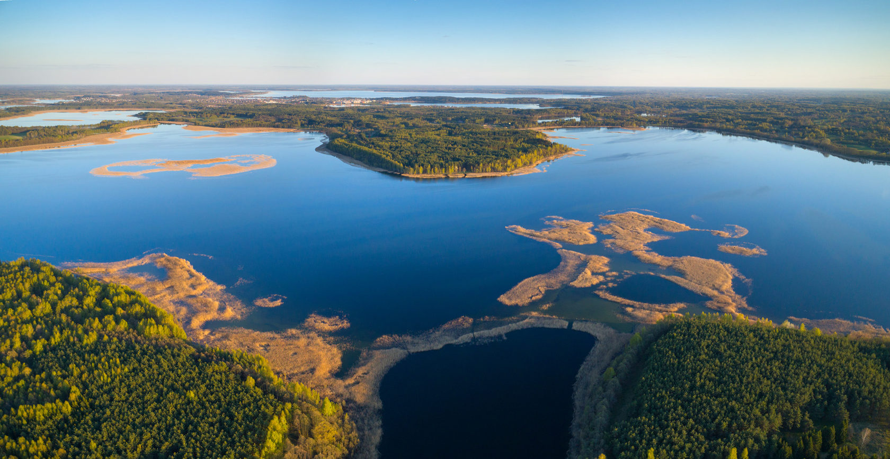
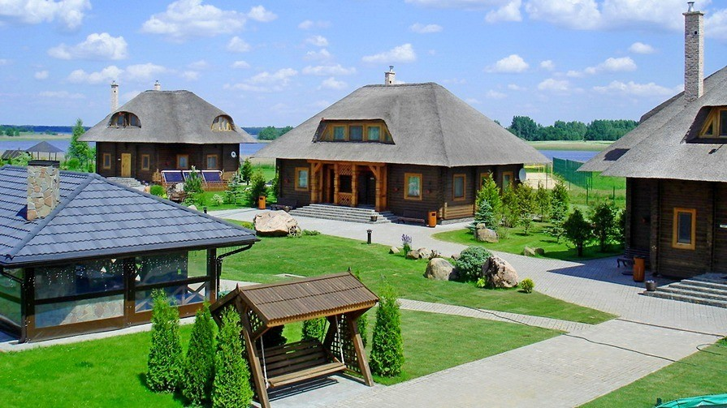

.
Браславские озёра


Сотни живописных озер, первозданная природа и необычный рельеф ледникового
периода сделали Браславский край одним из самых прекрасных уголков
Беларуси. В 1995 г. на уникальной природной территории Белорусского
Поозерья создан Национальный парк "Браславские озера". Административный
центр парка находится в старинном городе Браславе, выросшем на холмистом
перешейке между озерами Дривяты и Новяты. Крупнейший озерный регион
Беларуси – Браславское Поозерье – знаменит ландшафтами и рельефом, которые
оставил здесь древний ледник. Главное богатство – около 300 озер и
водоемов – разных по форме, площади, глубине, составу и прозрачности воды,
разнообразию флоры и фауны. За необычайную красоту их называют "голубым
ожерельем" Беларуси. Самые глубокие озера – Волосо Южный (максимальная
глубина 40,4 м), Волосо Северный (29,2 м), Укля (25 м) и Струсто (23 м).
Самые большие по площади – Дривяты (36 км², 5-е по величине в Беларуси) и
Снуды (22 км², 8-е в Беларуси). В Браславских озерах обитают реликтовые
беспозвоночные, которые свидетельствуют о чистоте воды. Здесь водится
более 30 видов рыб. На территории Браславского района сосредоточено около
35% гнездящихся в Беларуси птиц. Благодаря ледниковым процессам, у
большинства Браславских озер сложная форма. Изрезанная береговая линия
образует множество полуостровов, заливов и бухт. Кроме того, Браславщина –
край островов: на здешних озерах их более 100, в том числе необычных. К
примеру, остров Чайчин на озере Струсто – второй по величине в Беларуси
(1,6 км²) – имеет собственное внутреннее озеро. На двух островах озер
Иказнь и Дрисвяты в Средневековье были построены замковые укрепления. На
острове Неспиш в XVII-XIX веках существовал монастырь. До 40-х годов ХХ
века на крупных островах Браславских озер жили семьи рыбаков, но сегодня
здесь бывают только туристы. Еще одна особенность браславского рельефа –
примечательные по форме холмы: округлые камы и похожие на гребень озы.
Ледник оставил на территории края много камней, среди которых и валуны
внушительных размеров. Самый большой валун Браславщины – свыше 40 тонн –
находится на западном берегу озеро Струсто. Многим из древних камней
местные жители дали свои прозвища: Божий след, Чертов след, Коровий
камень…